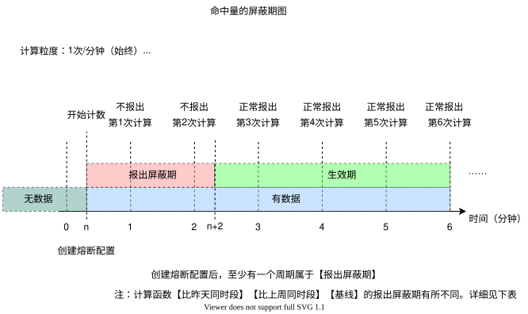
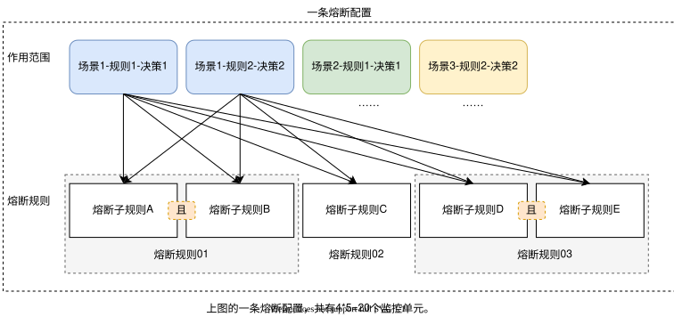
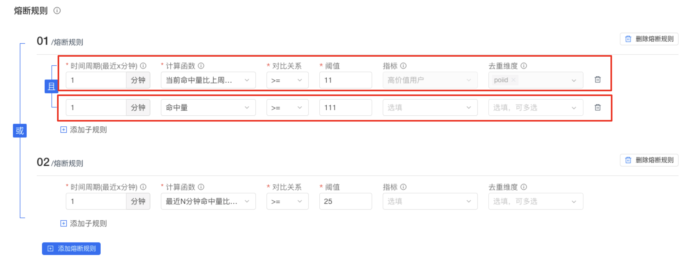
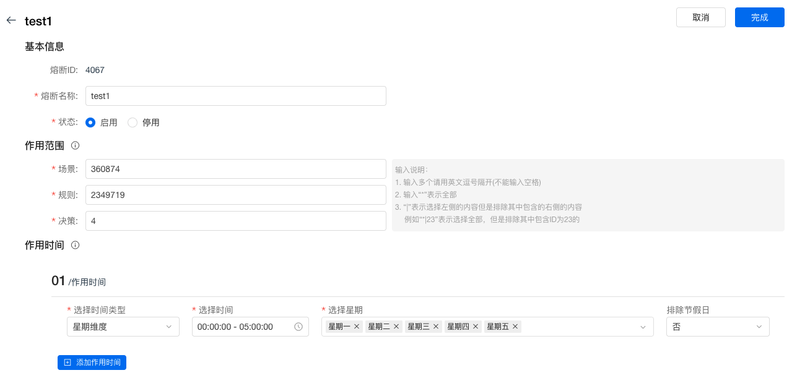
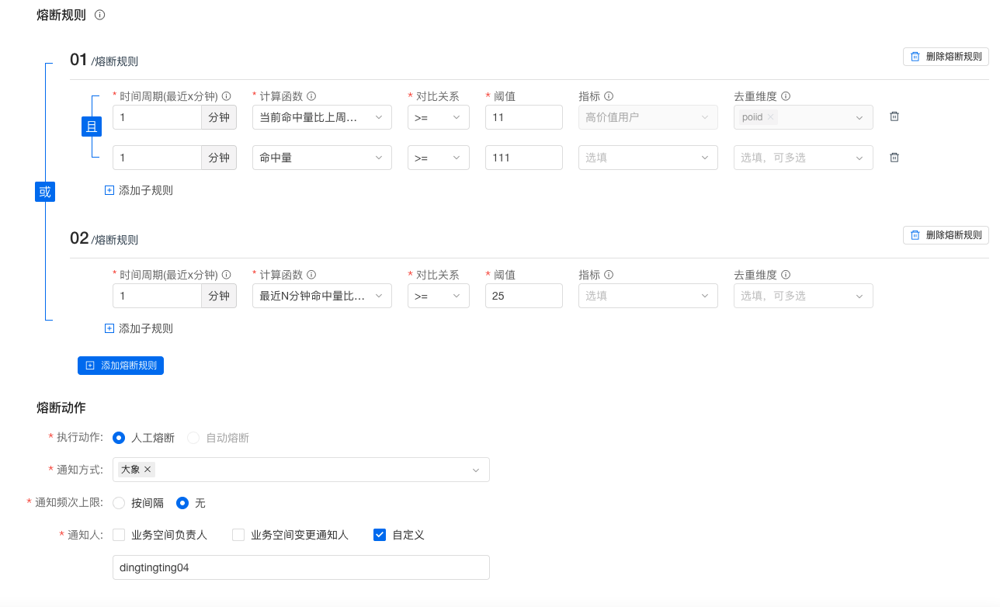

说明：监控/熔断报出屏蔽期
请在创建/修改监控和熔断配置前，阅读本文档。
1.报出屏蔽期与生效期
规则熔断功能在运行时包括：【监控计数】、【函数计算】、【告警报出】等动作。目前的监控模式下，用户创建新的熔断配置之前，相关的监控单元并未建立，计数的历史数据为0。因此，在熔断创建后初期，需要至少收集一个周期的数据，才可进行正式的报出，正式报出前的这段时间，为报出屏蔽期。正式报出开始之后的时间，为生效期。
为什么要屏蔽期？
--因为历史上监控单元没有计数，熔断建立初期（不够一个周期），告出的数据并不是真实在过去一个周期的流量情况。所以需要屏蔽。
【例1】监控过去5分钟命中量 小于100 则告出
--如果没有屏蔽期，则建立后的头几分钟（不足5分钟），大概率都会告警，因为还没收集够5分钟的数据。
【例2】监控过去5分钟比昨天同时期的上升比大于100%则告出
--如果没有屏蔽期，则建立后的头24小时，大概率会频繁告警。因为还没收集够1天的数据，此时的“昨天同时期”就是0，所以只要当前有一些命中量，上升比就很容易大过100%
|
示意图 |
说明 |
|---|---|
|
 |
左图展示一个监控计数单元（场景-规则-决策-熔断子规则）的熔断报出逻辑：
从图中可以看出，时间轴上n点之前没有任何历史数据，在第1分钟、第2分钟的计算时，由于实际累计命中量的时间长度还未满足用户设置的2分钟周期，此时即使命中量满足熔断规则（如最近2分钟的命中量<10），也不会报出告警，因为数据不全，报出不具有参考性。 在时间点n+2之后，已有完整的2分钟数据，此时进入生效期，在后续第3分钟、第4分钟……的计算节点上，一旦满足熔断规则便会正常报出。 |
2.不同计算函数的屏蔽期
值得注意的是，使用不同的计数函数，进入生效期的时长根据函数特性，会有所区别。
|
函数 |
报出屏蔽期：周期长度为n |
说明 |
|---|---|---|
|
命中量（最近一个周期） |
n |
计算最近1个周期的命中量，要求至少累计有【1个完整周期】的历史数据。 |
|
最近N分钟比之前N分钟 （最近一个周期比之前一个周期 上升/下降的 绝对量、百分比） |
2n |
计算最近1个周期与上一个周期的比较，要求至少累计有【2个完整周期】的历史数据。 |
|
最近一个周期的命中量比昨日同时段 （上升/下降的 绝对量、百分比） |
24小时+n |
计算最近1个周期与昨天同时段该周期的比较，要求至少累计有【24小时+1个完整周期】的历史数据。 |
|
最近一个周期的命中量比上周同时段 （上升/下降的 绝对量、百分比） |
1周+n |
计算最近1个周期与上周同时段该周期的比较，要求至少累计有【1周+1个完整周期】的历史数据。 |
|
最近一个周期的命中量比基线 （上升/下降的 绝对量、百分比） |
3周+n |
***基线是根据最近四周的同个时段（最近n分钟）的命中量的加权平均值，相关函数计算的是最近n分钟的命中量与基线的比较。要求至少累计有【3周+n分钟】的历史数据。 基线计算定义例：用户选择周期为n（例如最近2分钟），今天是2016-12-02（周五），计算的时间点为19:56，基线数据的算法是4个周五（2016-11-11，2016-11-18，2016-11-25，2016-12-02）的19:54-19:56这2分钟的数据的加权求和或平均，权重值依次为1，2，3，4。如：基线值设为value，四个周五对应的19:54-19:56数据（由远及近）分别为A,B,C,D，则value = (A+2B+3C+4D) / 10 |
3.修改监控/熔断配置须知
修改熔断配置项时，一些会使熔断计数重新开始，一些则可以直接修改。
|
示意图 |
说明 |
|---|---|
|
 |
熔断功能的最小独立监控单元是【场景-规则-决策-单个熔断子规则】，即【作用域】与【熔断子规则】相乘决定了监控单元的数量。因此，编辑【作用域】&【熔断规则】的增减，将直接决定监控单元的增减。 |
|
 |
如左图， 01、02为熔断规则，之间用【或】连接。01中有两条子规则，之间用【且】连接。计算报出时，会根据涉及到的多条子规则，以其中屏蔽期的最大者，来决定是否屏蔽本次报出（可以理解为每次报出的前置条件为：所涉及到的监控单元都在生效期内，否则就会屏蔽） |
如下表，一些修改动作会产生新的监控单元，新监控单元是新开始计数的，历史数据为0。（屏蔽期也从提交修改那刻起算）
|
页面&弹窗 |
修改项 |
影响说明 |
|---|---|---|
|
  |
基本信息 |
不影响 |
|
修改作用域 |
提交修改时，系统会判断本次修改是否变更了作用域，并给予用户二次弹窗确认是否修改。
|
|
|
作用时间 |
不影响 |
|
|
熔断规则 |
提交修改时，系统会判断本次修改是否变更了熔断规则，并给予用户二次弹窗确认是否修改。
|
|
|
熔断动作 |
不影响 |
|
|
熔断复制：复制熔断，相当于用被复制对象的配置 新建了一条熔断配置，因此也是重新开始计数。 |
||
4.特殊说明
|
项目 |
说明 |
|---|---|
|
屏蔽期覆盖不到的部分 |
目前，用户在未更改熔断配置的情况下，去zeus场景配置里【新增】了生效（灰度）的规则而产生的新监控单元，熔断的屏蔽期还无法覆盖到。对于这部分新增的监控单元，将没有屏蔽期作用，即新增后，一旦满足熔断规则便会立刻报出，请知晓。 |